3330D11 brake servo - r r including seperation from master cylinder - facia lining removed for rhd version
- Path
- Procedures > 33 BRAKING SYSTEM > 3330 HYDRAULIC BRAKING SYSTEM > 3330D brake vacuum system > 3330D11 brake servo - r r including seperation from master cylinder - facia lining removed for rhd version
- Kind
- repair procedure (removal / refitting; the operation number is the code)
- Applies to
- engines: 1.6 TS , 1.8 TS, 2.5 V6, 2.4 JTD 10v; all production periods
- Interactive page
- https://sloeber94.github.io/elrnDB-a156/en/#/3238086
Applies to: engines: 1.6 TS , 1.8 TS; all production periods; only with equipment: Right hand drive
 Removing
Removing
 Refitting
RefittingPosition the vehicle on the ramp.
Ensure that the ignition key is in stop position, then disconnect the battery negative terminal.
 | Name | Connector |
|---|---|---|
- | Battery |
1016A40 ignition coil cover on cylinder head- r+r .
1048A34 sleeve(s) from flow meter to air supply capacity case - r + r .
7055B54 under-engine guard - r r .
1076B50 exhaust pipe attachment to engine - r + r .
1072D10 modular inlet manifold - r+r .
Drain the brake-clutch fluid from the reservoir using a suitable syringe.
1. Disconnect the flexible pipes from the brake fluid reservoir to the master cylinder, master cylinder side.
2. Disconnect the vacuum pipe complete with one-way valves from the brake servo side and remove it after releasing it from the band.
3. Undo the connectors (3a) and disconnect the rigid pipes from the master cylinder to the ABS hydraulic control unit (3b), master cylinder side.
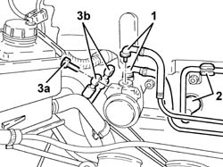
Applies to: engines: 1.6 TS , 1.8 TS; all production periods; only with equipment: Right hand drive
Remove the car from the ramp and position it with the wheels perfectly straight.
1. Remove the Alfa Romeo Code aerial from the ignition switch.
2. Disconnect the electrical connections (2a) and (2b) from the ignition switch.
| Name | Connector |
|---|---|---|
2a | Ignition switch |
| Name | Connector |
|---|---|---|
2b | Ignition switch |
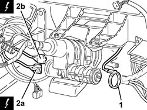
Applies to: engines: 1.6 TS , 1.8 TS; all production periods; only with equipment: Right hand drive
Release the electrical wiring from the bands on the steering column and move it aside.
1. Undo the bolt (1a) and disconnect the lower steering control shaft (1b) from the power assisted steering box pinion.
2. Remove the brake lights switch from its seating and move it aside without disconnecting the electrical connection.
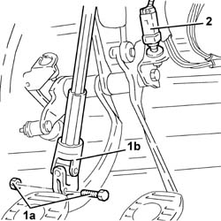
Applies to: engines: 1.6 TS , 1.8 TS; all production periods; only with equipment: Right hand drive
1. Undo the bolts (1a) and remove the mounting with steering shafts (1b).
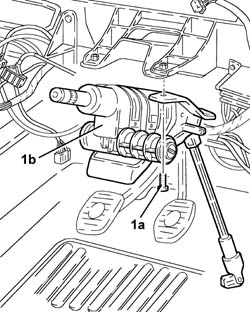
Applies to: engines: 1.6 TS , 1.8 TS; all production periods; only with equipment: Right hand drive
1. Disconnect the electrical connections.
2. Undo the nuts (2a) and remove the bracket (2b) for the electrical connection.
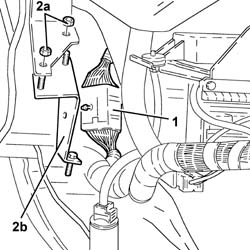
Applies to: engines: 1.6 TS , 1.8 TS; all production periods; only with equipment: Right hand drive
1. Withdraw the clip (1a) and disconnect the throttle cable (1b) from the accelerator pedal.
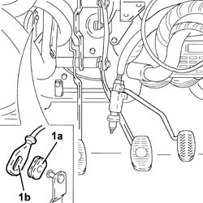
Applies to: engines: 1.6 TS , 1.8 TS; all production periods; only with equipment: Right hand drive
1. Undo the nuts (1a), disconnect the counterspring (1b) and remove accelerator pedal (1c).
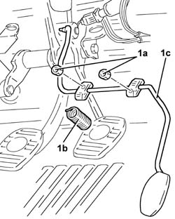
Applies to: engines: 1.6 TS , 1.8 TS; all production periods; only with equipment: Right hand drive
1. Loosen the nuts securing the master cylinder.
2. Remove the split pin (2a) and disconnect the master cylinder rod (2b) from the clutch pedal.
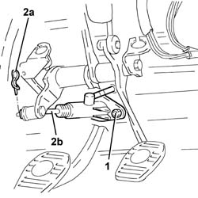
Applies to: engines: 1.6 TS , 1.8 TS; all production periods; only with equipment: Right hand drive
1. Undo the nuts (1a) and remove the pedal assembly complete with brake servo 91c) and master cylinder.
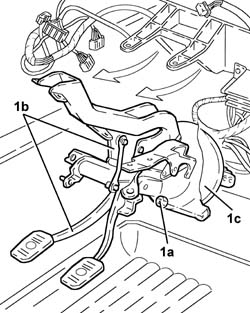
Applies to: engines: 1.6 TS , 1.8 TS; all production periods; only with equipment: Right hand drive
Refitting
RemovingPlace the pedal unit complete with servobrake and cylinder head back in its housing, then secure using the relevant bolts.
1. Connect the master cylinder (1a) to the clutch pedal and secure it with its split pin (1b).
2. Tighten the nuts securing the master cylinder to the pedal unit to the specified torque.
 | Fastening | Component | Ø | Value (daNm) |
|---|---|---|---|---|
2 | Nut | CLUTCH FLUID MASTER CYLINDER | M8 | 1.3 - 2.1 |
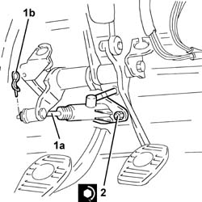
Applies to: engines: 1.6 TS , 1.8 TS; all production periods; only with equipment: Right hand drive
Fit the accelerator pedal complete with reaction spring and fix it using the nuts.
Connect the throttle cable to the accelerator pedal and secure it with its clip.
Refit the electrical connection mounting bracket in its seating and fix it using the nuts.
Connect the electrical connection
Place the support with the steering control shafts back in its housing and secure it using the bolts.
Replace the brake light switch in its seat.
Connect the electrical connections to the ignition switch.
Refit the Alfa Romeo code aerial back in its housing on the ignition switch.
Position the vehicle on the ramp.
1. Connect the rigid pipe from master cylinder to ABS hydraulic control unit (1a), master cylinder side, and tighten the connectors (1b) to the specified torque.
| Fastening | Component | Ø | Value (daNm) |
|---|---|---|---|---|
1b | Connector | PIPE FROM PUMP TO HYDRAULIC CONTROL UNIT | M10 | (Pump side) 1.3 - 1.5 |
2. Connect the vacuum pipe complete with one-way valves from the brake servo side and secure it using the band.
3. Connect the flexible pipes from brake fluid reservoir to master cylinder, master cylinder side.
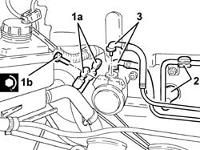
Applies to: engines: 1.6 TS , 1.8 TS; all production periods; only with equipment: Right hand drive
3330A14 HYDRAULIC BRAKING SYSTEM - Bleed air .
1072D10 modular inlet manifold - r+r .
1076B50 exhaust pipe attachment to engine - r + r .
7055B54 under-engine guard - r r .
1048A34 sleeve(s) from flow meter to air supply capacity case - r + r .
1016A40 ignition coil cover on cylinder head- r+r .
1. Adjust the accelerator cable (1a) using the clip (1b) so that with the pedal released the butterfly is completely closed and the cable clearance "H" is 5 mm.
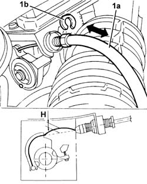
Applies to: engines: 1.6 TS , 1.8 TS; all production periods; only with equipment: Right hand drive
Check that the end of travel stop on the throttle body is home when the pedal is fully depressed (throttle open). If not, adjust the end of travel stop on the accelerator pedal.
Connect the battery terminal (-).
Remove the car from the ramp.
Applies to: engines: 2.5 V6; all production periods; only with equipment: Right hand drive
Removing
Refitting7045A10 l/h or r/h front seat (one) - r+r (right)
Drain the brake-clutch fluid from the reservoir using a suitable syringe.
1008C10 power unit upper reaction link r r
1. Disconnect the fuel vapour recirculation pipe and remove.
2. Unscrew retaining bolts (2a) and remove electrical connection protective cover (2b).
3. Undo the bolts (3a) and move aside the mounting bracket for the electrical connections.
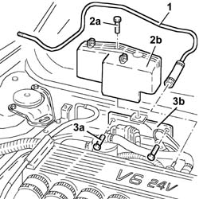
Applies to: engines: 2.5 V6; all production periods; only with equipment: Right hand drive
1. Undo button (1a) and move aside engine bulkhead panel (1b).
2. Open collar (2a) and move panel (1b) away from the engine bulkhead.
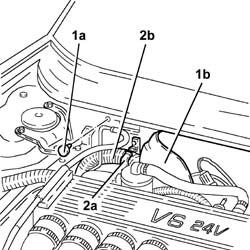
Applies to: engines: 2.5 V6; all production periods; only with equipment: Right hand drive
1. Disconnect the hoses from the brake fluid reservoir to the master cylinder, master cylinder side.
2. Disconnect the rigid brake pipes from the master cylinder to the control unit, master cylinder side.
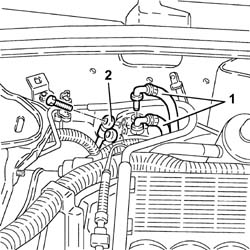
Applies to: engines: 2.5 V6; all production periods; only with equipment: Right hand drive
1. Disconnect the brake servo vacuum pipe from the inlet chamber.
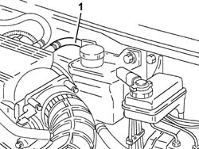
Applies to: engines: 2.5 V6; all production periods; only with equipment: Right hand drive
1. Disconnect the electrical connection from the ignition barrel.
2. Remove the Alfa Romeo CODE aerial from the ignition barrel.
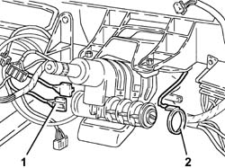
Applies to: engines: 2.5 V6; all production periods; only with equipment: Right hand drive
1. Unscrew bolt (1a) and disconnect lower steering shaft (1b) from the power steering box.
2. Remove brake light switch (2a) and clutch pedal switch (2b) from their seats without disconnecting the electrical connections.
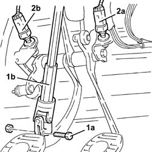
Applies to: engines: 2.5 V6; all production periods; only with equipment: Right hand drive
1. Undo the bolts (1a) and remove the steering column assembly (1b).
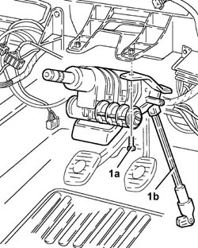
Applies to: engines: 2.5 V6; all production periods; only with equipment: Right hand drive
Withdraw the retainer and disconnect the accelerator pedal link from the potentiometer.
1. Undo the nuts (1a), disconnect the counterspring (1b) and remove accelerator pedal (1c).
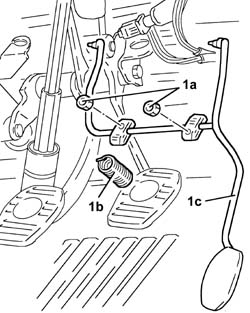
Applies to: engines: 2.5 V6; all production periods; only with equipment: Right hand drive
1. Disconnect the intermediate electrical connection.
2. Undo the nuts (2a) and remove the electrical wiring mounting bracket (2b).
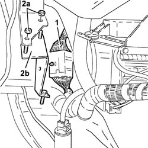
Applies to: engines: 2.5 V6; all production periods; only with equipment: Right hand drive
Unscrew the bolts and move the valve unit.
Unscrew the bolts and move the accelerator pedal potentiometer away from the valve unit.
1. Remove the split pin (1a) and disconnect the master cylinder (1b) from the clutch pedal.
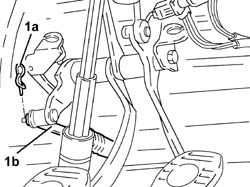
Applies to: engines: 2.5 V6; all production periods; only with equipment: Right hand drive
1. Open collar (1a) and move electrical wiring (1b).
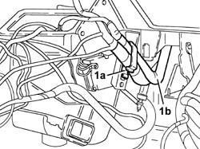
Applies to: engines: 2.5 V6; all production periods; only with equipment: Right hand drive
1. Undo the nuts (1a) and remove pedal unit (1b) complete with brake servo (1c) and master cylinder (1d).
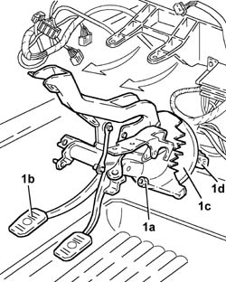
Applies to: engines: 2.5 V6; all production periods; only with equipment: Right hand drive
Refitting
RemovingFit the pedal unit with brake servo and master cylinder and secure with nuts.
Place the electrical wiring back in its housing and fix it to the bands.
Connect the master cylinder to the clutch pedal and secure it with its split pin.
Fit the accelerator pedal potentiometer and secure to the pedal unit with its bolts.
Refit the valve unit and bolt in place.
Place the electrical wiring mounting bracket back in its housing and fix it using the nuts.
Connect the intermediate electrical connection.
Fit the accelerator pedal complete with reaction spring and fix it using the nuts.
Connect the accelerator pedal link to the potentiometer and secure it with its retainer.
Fit the steering column assembly and secure using the appropriate bolts.
Replace the clutch pedal switch and the brake pedal switch in their seats.
Connect the lower steering shaft to the steering box and tighten the bolt to the specified torque.
| Fastening | Component | Ø | Value (daNm) |
|---|---|---|---|---|
- | Bolt | STEERING SHAFT JOINTS | M8 | Power assisted steering box side 1.9 - 2.1 |
Fit the Alfa Romeo CODE aerial to the ignition barrel.
Connect the electrical connections to the ignition barrel.
Connect the brake servo vacuum pipe to the intake chamber.
Connect the rigid pipes from master cylinder to control unit, master cylinder side, and tighten the connectors to the specified torque.
| Fastening | Component | Ø | Value (daNm) |
|---|---|---|---|---|
- | Connector | PIPE FROM PUMP TO HYDRAULIC CONTROL UNIT | M10 | Master cylinder side 1.3 - 1.5 |
Connect the hoses from brake fluid reservoir to master cylinder, master cylinder side.
Place the electrical wiring back in its housing and fix it to the bands.
Place the bonnet lid lack back in its housing and fix it using the nuts.
Refit the electrical connections mounting bracket and fix it using the bolts.
Fit the electrical connection protective cover and fix it using the bolt.
Fit and connect the fuel vapour recirculation pipe.
1008C10 power unit upper reaction link r r
3330A14 HYDRAULIC BRAKING SYSTEM - Bleed air
7045A10 l/h or r/h front seat (one) - r+r (right)
After refitting, adjust the accelerator pedal as described below.
Make sure that the ignition key is in the OFF position.
Connect the tool to the diagnostic socket and place the knob in position 3.
 | Name | Country |
|---|---|---|
- | MPX 97 switch | 1.806.365.000 |
Connect the Examiner diagnostic equipment.
Turn the ignition to the ON position.
Using the Examiner, enter the "Parameters" environment.
Press "Selection" and select the "Accelerator position track 1" parameter.
Check that the potentiometer's calibration conforms to the specified values:
- idling (accelerator pedal released), 8% +/- 1%
- fully open (accelerator pedal fully depressed), 64.3% +/- 1%.
- If the setting is not as specified, adjust the accelerator pedal travel by means of the accelerator pedal travel stop screw beneath the pedal.
Remove the diagnostic equipment.
Applies to: engines: 2.4 JTD 10v; all production periods; only with equipment: Right hand drive
Removing
Refitting7045A10 l/h or r/h front seat (one) - r+r (Right).
1. Undo the bolts (1a) and remove the sound insulation cover (1b).
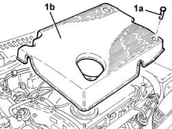
Applies to: engines: 2.4 JTD 10v; all production periods; only with equipment: Right hand drive
Drain the brake-clutch fluid from the reservoir using a suitable syringe.
1. Undo nut (1a) and move the plug preheating control unit (1b) in the bonnet bulkhead.
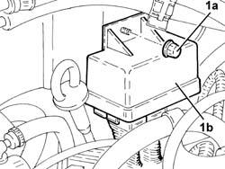
Applies to: engines: 2.4 JTD 10v; all production periods; only with equipment: Right hand drive
1. Undo nut (1a) and remove bracket (1b) after disengaging it from the vacuum outlet pipe.
2. Loosen the band and disconnect the servobrake vacuum outlet pipe connector.
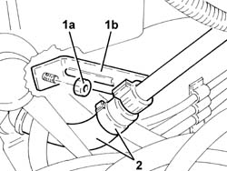
Applies to: engines: 2.4 JTD 10v; all production periods; only with equipment: Right hand drive
1. Disconnect the hoses from the brake fluid reservoir to the master cylinder, master cylinder side.
2. Undo connectors (2a) and disconnect the brake rigid pipe from master cylinder to control unit (2b), master cylinder side.
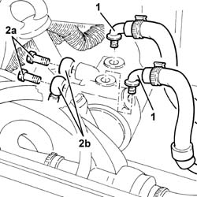
Applies to: engines: 2.4 JTD 10v; all production periods; only with equipment: Right hand drive
1. Disconnect the electrical connection from the ignition barrel.
2. Remove the Alfa Romeo CODE aerial from the ignition barrel.
Applies to: engines: 2.4 JTD 10v; all production periods; only with equipment: Right hand drive
1. Unscrew bolt (1a) and disconnect lower steering shaft (1b) from the power steering box.
2. Remove brake light switch (2a) and clutch pedal switch (2b) from their seats without disconnecting the electrical connections.
Applies to: engines: 2.4 JTD 10v; all production periods; only with equipment: Right hand drive
1. Undo the bolts (1a) and remove the steering column assembly (1b).
Applies to: engines: 2.4 JTD 10v; all production periods; only with equipment: Right hand drive
Withdraw the retainer and disconnect the accelerator pedal link from the potentiometer.
1. Undo the nuts (1a), disconnect the counterspring (1b) and remove accelerator pedal (1c).
Applies to: engines: 2.4 JTD 10v; all production periods; only with equipment: Right hand drive
1. Disconnect the intermediate electrical connection.
2. Undo the nuts (2a) and remove the electrical wiring mounting bracket (2b).
Applies to: engines: 2.4 JTD 10v; all production periods; only with equipment: Right hand drive
Unscrew the bolts and move the valve unit.
Unscrew the bolts and move the accelerator pedal potentiometer away from the pedal unit.
1. Remove the split pin (1a) and disconnect the master cylinder (1b) from the clutch pedal.
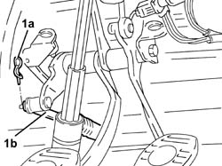
Applies to: engines: 2.4 JTD 10v; all production periods; only with equipment: Right hand drive
1. Open collar (1a) and move electrical wiring (1b).
Applies to: engines: 2.4 JTD 10v; all production periods; only with equipment: Right hand drive
1. Undo the nuts (1a) and remove pedal unit (1b) complete with brake servo (1c) and master cylinder (1d).
Applies to: engines: 2.4 JTD 10v; all production periods; only with equipment: Right hand drive
Refitting
RemovingPlace the pedal unit complete with servobrake and cylinder head back in its housing, then secure using the relevant bolts.
Place the electrical wiring back in its housing and fix it to the bands.
Connect the master cylinder to the clutch pedal and secure it with its split pin.
Fit the accelerator pedal potentiometer and secure to the pedal unit with its bolts.
Refit the valve unit and bolt in place.
Place the electrical wiring mounting bracket back in its housing and fix it using the nuts.
Connect the intermediate electrical connection.
Fit the accelerator pedal complete with reaction spring and fix it using the nuts.
Connect the accelerator pedal link to the potentiometer and secure it with its retainer.
Fit the steering column assembly and secure using the appropriate bolts.
Replace the clutch pedal switch and the brake pedal switch in their seats.
Connect the lower steering shaft to the steering box and tighten the bolt to the specified torque.
| Fastening | Component | Ø | Value (daNm) |
|---|---|---|---|---|
- | Bolt | STEERING SHAFT JOINTS | M8 | Power assisted steering box side 1.9 - 2.1 |
Place the Alfa Romeo CODE antenna back in its housing on the ignition barrel.
Connect the electrical connections to the ignition barrel.
Connect the rigid pipes from master cylinder to control unit, master cylinder side, and tighten the connectors to the specified torque.
| Fastening | Component | Ø | Value (daNm) |
|---|---|---|---|---|
- | Connector | PIPE FROM PUMP TO HYDRAULIC CONTROL UNIT | M10 | Master cylinder side 1.3 - 1.5 |
Connect the hoses from brake fluid reservoir to master cylinder, master cylinder side.
Connect the servo brake vacuum outlet pipe connector.
Place the vacuum outlet pipe support bracket back in its housing and secure with the relevant nut.
Place the plug preheating control unit back in its housing and secure with the relevant nut.
Place the soundproof cover back in its housing and secure using the relevant bolts.
7045A10 l/h or r/h front seat (one) - r+r (Right).
3330A14 HYDRAULIC BRAKING SYSTEM - Bleed air .
Connect Examiner and check the throttle valve calibration parameters. If the values are not within recommended limits, regulate the accelerator pedal travel adjustment bolt found under the pedal itself.
Topics linked from this page (11)
- 1008C10 power unit upper reaction link r r
- 1016A40 ignition coil cover on cylinder head- r+r
- 1048A34 sleeve(s) from flow meter to air supply capacity case - r + r
- 1072D10 modular inlet manifold - r+r
- 1076B50 exhaust pipe attachment to engine - r + r
- 3330A14 HYDRAULIC BRAKING SYSTEM - Bleed air
- 7045A10 l/h or r/h front seat (one) - r+r
- 7055B54 under-engine guard - r r
- A1B Battery ( BATTERY NEGATIVE )
- H1A Ignition switch ( FRONT )
- H1B Ignition switch ( FACIA )